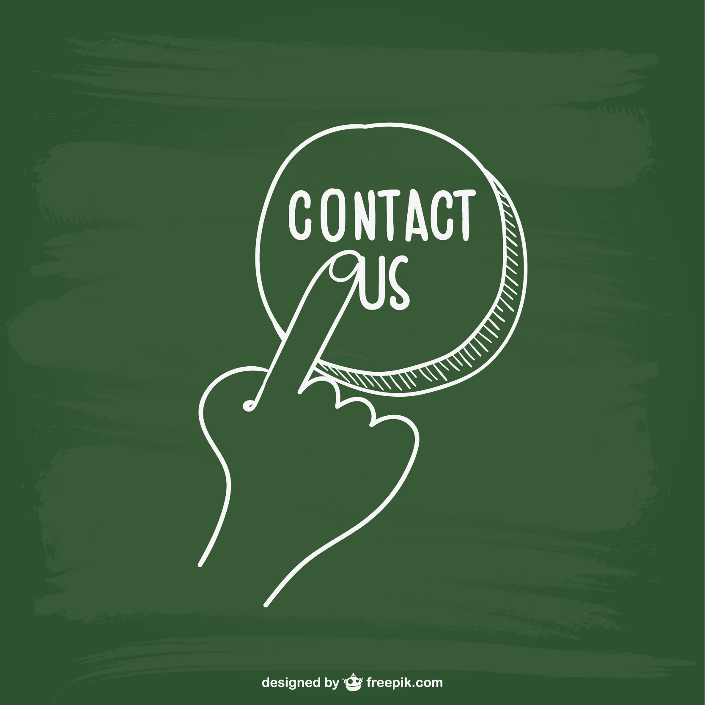

Hello I'm Okwuosa Oluchi
A Fullstack Web Developer
I'm a web developer based in Lagos,Nigeria and i'm very
passionate and dedicated to my work
About me
Welcome to my corner of the web! I'm Oluchi, a seasoned web developer driven by a passion for creating captivating online experiences.
With 2 years of industry experience, I've worked on diverse projects, from corporate websites to dynamic e-commerce platforms.
What sets me apart is my dedication to excellence. I thrive on challenges, constantly pushing the boundaries of what's possible.
Whether it's mastering new frameworks or optimizing performance, I'm committed to exceeding expectations.
I believe in the power of collaboration. I value open communication, working closely with clients to ensure their vision is fully realized.
Beyond coding, I'm an avid learner, always exploring new technologies and contributing to open-source projects.
Whether you're a startup, established business, or fellow developer, I'm here to help bring your ideas to life.
Let's build something amazing together. Get in touch, and let's embark on this exciting journey!
Work
XYZ Tech Solutions | City, State | 2021 - Present
As a Senior Web Developer at XYZ Tech Solutions, I lead a team of developers in creating innovative web solutions for a diverse range of clients.
My role involves overseeing the entire development lifecycle, from initial concept and design to deployment and maintenance.
Collaborating closely with designers, project managers, and clients, I ensure that each project meets the highest standards of quality and exceeds client expectations.
ABC Digital Agency | City, State | 2019 - 2021
At ABC Digital Agency, I played a pivotal role in developing custom web applications and websites for various clients across different industries.
Working in a fast-paced agency environment, I honed my skills in front-end and back-end development, as well as database management and server configuration.
I collaborated closely with cross-functional teams to deliver projects on time and within budget, while also providing technical support and troubleshooting as needed.
Tech Start-up Co. | City, State | 2018 - 2019
As a Junior Web Developer at a tech start-up, I gained hands-on experience working on cutting-edge projects from day one.
I assisted in developing and maintaining web applications using modern technologies such as HTML5, CSS3, JavaScript, and PHP.
I actively participated in team meetings, contributed to project planning, and continuously expanded my skill set through self-directed learning and mentorship from senior developers.
Resume

Summary
Dynamic and skilled Web Developer with 3 years of experience in creating innovative and user-centric web solutions.
Graduated from the Federal University of Technology Akure in 2018, with a strong foundation in computer science.
Proficient in both front-end and back-end development technologies, with a passion for delivering high-quality projects that exceed client expectations.
Education:
Bachelor of Science in Computer Science
Federal University of Technology Akure, 2018
Technical Skills:
Front-End Development:
HTML5, CSS3, JavaScript, React
Back-End Development:
Node.js, Express.js, MongoDB, MySQL
Other Skills:
Version Control (Git), Responsive Design, Cross-Browser Compatibility, Agile Methodologies
Contact Us
Let's Disscus Your Project
